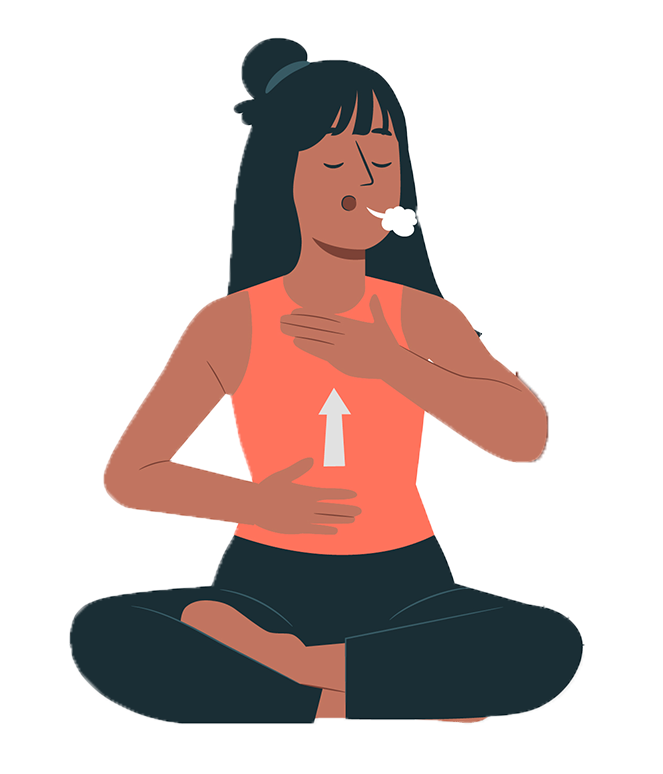

Gyakorlatok
Légzés meditáció
Ez az meditáció arról szól, hogy tudatosítjuk a légzésünket és ráfókuszálunk.
Helyezkedjünk el egy kényelmes pozícióban ülve vagy akár fekve is, a lényeg, hogy egyenes háttal legyünk. Majd összpontosítsuk a figyelmünket a belégzésünkre és a kilégzésünkre. Ezt lehet úgy csinálni, hogy megkeressük azokat a helyeket, ahol érezzük a légzésünket: az orrunknál ahogy be és kisüvít a levegő, érezhetjük a torkunkban, valamint a hasunknál ahogy megtelik a tüdő levegővel. Az egyetlen dolog tehát amit csinálnunk kell, hogy figyelemteljesen be és kilélegzünk illetve a fókuszpontunkat ezekre az érzésekre összpontosítjuk.
Természetesen, ha kezdő vagy nehéz lehet elkezdeni. Ilyenkor olyan érzés mintha mi irányítanánk a légzésünket, viszont a cél az, hogy ne mi irányítsuk azt, hanem csak megfigyeljük. Ezt kis gyakorlással el lehet érni. Továbbá nehézség lehet az elején még, hogy elkalandoznak a gondolataink. Ilyenkor nem kell kétségbeesni, egyszerűen csak tudatosítsuk magunkban, hogy elkalandoztunk vagy mondjuk magunknak, hogy "Jé, ez egy gondolat", bármiféle ítélkezés nélkül. Majd gyengéden tereljük vissza a figyelmünket a gyakorlatra. A lényeg, hogy ne alakítsunk ki véleményt a fejünkben ezekeről a gondolatokról, hanem csak figyeljük meg őket. Már attól, hogy tudatosítjuk magunkban ezeket jelen leszünk a pillanatban és fejlődünk. Ezt a tudatosítást bármelyik meditációnál használjuk.
A nap meditáció
Ez a meditáció kifejezetten jó lehet stresszredukálásra. A gyakorlat végén egy relaxált, kellemes fizikális érzések között távozhatunk.
Keressünk egy kényelmes pozíciót ülve vagy fekve, a lényeg, hogy egyenes hátunk legyen. Képzeljünk el egy számunkra kedves, megnyugtató helyet. Lehet egy homokos tengerpart, egy mező vagy bármi, a lényeg, hogy megynyugtató érzéssel töltsön el. Képzeljük el, hogy ott fekszünk háttal és egy nap ragyog felettünk. Majd ez a nap egészen a lábujjainktól kezdve elkezd minket beragyogni, ahol beragyog minket onnan elolvaszt minden nehézséget, fájdalmat, fáradtságot, terhet valamint lehúzást és a szürkeség helyett ott már ragyogunk.
A lényeg, hogy lentről szép lassan felfelé haladunk a fejünk búbjáig. Nem kell sietni, szép lassan csináljuk. Képzeljük el a nap melegségét a bőrünkön és élvezzük azt. A nap sugarai mindent beragyognak: a hátunkat, a szemgödrünket, a torkunkat, az ujjainkon a körmünk alatt és térdünket is. Majd ha szépen elértünk a fejünkig és már mindenhol ragyogunk, maradjunk ezzel az érzéssel egy picit. Érezzük a melegséget és élvezzük, hogy megszabadultunk a stressztől. Majd próbáljuk a meditáció után is tovább vinni ezt az érzést. Idővel ez egyre tovább fog tartani és a cél, hogy mindennap a lehető legtöbbször érezzük magunkat így.

Egyperces meditáció
Ezzel a gyors erőfeszítés nélküli gyakorlattal gyorsan meg tudjuk nyugtatni magunkat. Nyitott szemmel végig lehet csinálni az egészet.
Kezdjük el úgy, hogy ráfokuszálunk egy pontra ahonnan nem vesszük le a szemünket a gyakorlat végéig. Kicsit összpontosítsunk arra a pontra majd ezután anélkül, hogy levennénk a tekintetünket onnan, a periférikus látásunkkal összpontosítsunk egy másik pontra. Ezután fókuszáljunk mindenre amit csak látunk, lássunk mindent úgy mintha minden fókuszban lenne. Most figyeljünk csak a hangokra. Ezután koncentráljunk a hangokra és lássunk egyszerre mindent. Ezután érezzük, hogy hol érintkezik a testünk valami mással. Ezután érzékeljük a hangokat és érezzük testünket. Majd végül kapcsoljunk össze mindent és összpontosítsuk minden figyelmünket egyszerre a hangokra, az érzésekre és a látásra.
Ez egy egyszerű, de rendkívül praktikus gyakorlat, amit bárhol bármikor el tudunk végezni.
Extrák + kombinálás
Meditációkat lehet kombinálni vagy plusz dolgokat beletenni, a lényeg az, hogy élvezetes legyen számunkra. A cél az, hogy egy meditáció minimum 10 perc legyen, de ez nem egy megkötés természetesen lehet kevesebb is, ha nincsen elég időnk.
Ha egy gyakorlat rövid lenne és többet szeretnénk meditálni illetve nem szeretnénk kettő gyakorlatot egyhuzamban csinálni ezekkel az extrákkal ki lehet egészíteni.
A gyakorlat elején még nyitott szemmel vegyünk néhány mély levegőt. Lassan be az orron keresztül, egy kicsit lenn tartani majd a szájon kifújni. Ezután egy kifújás során gyengéden hajtsuk le a szemünket.
Még szintén a gyakorlat előtt figyeljünk hangokra: vannak-e körülöttünk zajok, zavarnak-e minket. A lényeg, hogy ne alakítsunk ki különféle véleményeket róluk, csak figyeljük meg őket és fogadjuk el.
Ezután megfigyelhetjük a testünkön lévő érzéseket: hol érintkezik a bőröm valamivel, koncentráljunk ezekre a helyekre. Illetve megfigyelhetjük azokat a helyeket ahol nem érintkezünk mással.
Ezekután koncentrálhatunk a súlyunkra, ahogy lenyomjuk, ránehezedünk arra amin épp elhelyezkedünk illetve az is ránehezedik valamire amin éppen elhelyezkedünk stb.
Majd megvizsgálhatjuk magunkat, hogy hogyan érzi magát a testünk: tele vagyunk energiával, kimerültek vagyunk, békésen vagy zavarosan érezzük magunkat. Itt is a lényeg, hogy ne kérdezzünk miérteket, hanem csak fogadjuk el ezt az állapotot erre a pillanatra. Ezeket mind a gyakorlat végén és elején is el lehet végezni.
Arra is van lehetőség, hogy több gyakorlatot kombináljunk, például az előbb bemutatott légzésgyakorlatot betehetjük a nap meditáció elé és így akár egy meditáció alatt tudjuk a kettőt elvégezni.